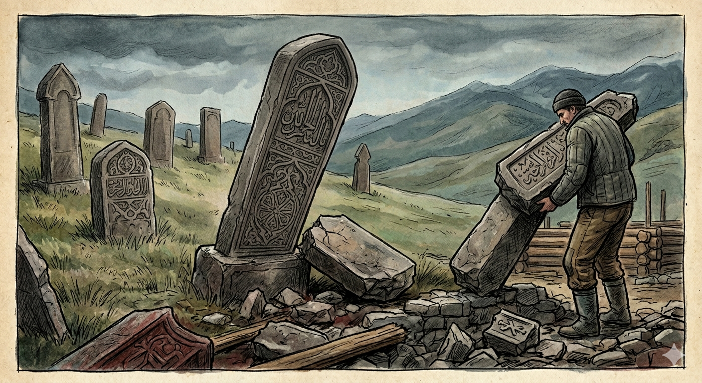

И.А. Дахкильгов. Хьехаме дувцарш - поучительные рассказы-притчи.
И.А. Дахкильгов. Хьехаме дувцарш - поучительные рассказы-притчи. Из ингушского фольклора.

Иманаза бараш
Цхьан хӀиречунгара хезад сона ер, аьнна, дийцар Эккаж-къонгий юртарча цхьан воккхача саго: Вай СибарегӀа Ӏодахийтача хана, вай моттигаш дӀалийцача хӀираша вай кашамаш дохадаь хиннадар. Чуртех хьаштагӀаш йора цар, силос еча кӀоагашка дехкар чурташ. Цхьаннена дагадеха хиннадар керда хьалдеча цӀенна лард чуртех йолла. Уж цӀенош цунна сенна эшаш хиннад а хац, иштта а вай цӀадахкалцца даьсса латташ хиннадар цхьадараш. ХӀаьта а хьалдаьд-кха цо из цӀа, тӀакха ший дезалца дӀачувахав цу чу ваха. Цу ханара денна сатем байна хиннаб фусам-даь. ХӀарача бийсанна унзара гӀа гуш хиннад цунна: гӀанахьа цхьан къонахчо хьа а дай, доккха бога Ӏоотадеш хиннад, тӀаккха шин къонахчо, ши пхьарс тӀехьашка а баьккхе, ер фусам-да букара а верзавий, тӀавугаш хиннав цу бога. ӀотӀаверзавеш хиннав. Доккха урс дахьаш воагӀаш хиннав кхоалагӀвар. Цо чхаппенца дӀабохийташ хиннаб цу фусам-даь къамарг.Йоккха цӀий кӀедж тохаш хиннай. ХӀарачабус гуш дола из ийрча сурт кхы ла а ца могаш, геттар дарегӀа уж цӀенош дехкад цо. Кердача фусам-даьна а из гӀа гуш хиннад. ТӀаккха кхийттав из уж цӀенош селлара дарегӀа шийна хӀана дехка хиннад. Из унзара гӀа кхыча наха дӀадийцад цо, ше цу цӀагӀара дӀавахав. Саг чуводаш хиннадац из цӀа. Вай цӀадахкалцца даьсса лаьттад, цхьан бийсанна даьттӀа дӀадахад. ЦӀабаьхкача наха цигара чурташ кашамашка хьалдихьад. Даллас мегийта хиннадац иззал чӀоагӀа иман дайна нах хилар, кашамаш цар ийрчадахар… Ший хоамаш деш хиннад Далла.
РУССКИЙ
Кощунство
Один старик из Экажева рассказывал о случае, о котором ему поведал некий осетин. Когда нас выслали, то поселившиеся вместо нас люди разрушили наши кладбища, а из чуртов - надмогильных памятников - стали сооружать нужники и силосные ямы. Кто-то догадался употребить эти камни на постройку дома. Я только не знаю, зачем ему надо было строить: ведь даже не все наши дома были заняты, некоторые так и стояли пустыми до нашего возвращения. Но почему-то он построил дом, и его семья вселилась в него. С этого дня хозяин дома потерял покой, потому что каждую ночь его стал одолевать страшный сон. Он видел во сне, как один человек приносил и ставил большой таз, затем двое приводили связанного хозяина дома и наклоняли его голову над тазом, появлялся мужчина с большим ножом и резал ему горло, а кровь большой струей била в таз. Хозяин этого дома не вынес еженощных кошмаров и за бесценок продал дом первому же покупателю. Но и нового хозяина начал одолевать тот же сон. Понял он, почему так дешево достался ему этот дом, но, в отличие от прежнего хозяина, рассказал кому-то свой страшный сон. Ясно, что после этого никто не пожелал купить у него этот дом. Жить же в нем он больше не мог. Так этот дом и стоял пустым, пока мы не вернулись. Потом этот дом снесли, а памятники унесли на кладбище. Бог не мог простить столь неслыханного кощунства, как издевательство над памятью людей, и потому слал свою весть.
ENGLISH
Blasphemy
An elderly man from Ekazhev recounted an incident that had been told to him by an Ossetian. When we were deported, the people who settled in our place destroyed our cemeteries, and began using the churts - the gravestones - to build outhouses and silo pits. Someone had the idea of using these stones to build a house. I just don't know why he needed to build one: after all, not even all our houses were occupied; some remained empty right up until our return. But for some reason he built a house, and his family moved in. From that day on, the owner of the house lost his peace of mind, because every night he was overcome by a terrible dream. In his dream, he would see a man bringing in and placing a large basin; then two men would bring in the bound owner of the house and bend his head over the basin; a man with a large knife would appear and slit his throat, and blood would gush in a great stream into the basin. The owner of the house could no longer bear the nightly nightmares and sold the house for a song to the very first buyer. But the new owner, too, began to be plagued by the same dream. He realised why the house had come to him so cheaply, but, unlike the previous owner, he told someone about his terrifying dream. Naturally, after that, no one wanted to buy the house from him. He could no longer live there himself. So the house stood empty until we returned. Later, the house was demolished, and the gravestones were taken to the cemetery. God could not forgive such an unheard-of sacrilege as mocking the memory of the dead, and so He sent His message.
НОХЧИЙН
Иманаза бераш
Цхьана хӀиричуьнгара хезна суна хӀара, аьлла, дийцара Эккаж-къонгий йуьртарчу цхьана воккхачу стага. Вай Сибрех дӀадахийтинчу хенахь, вай меттигаш дӀалийцинчу хӀираша вай кешнаш дохийна хилла. Чуьртех хьаштагӀаш йора цара, силос йечу кӀаьгнашка дахкар чарташ. Цхьанна дагадеана хилла керла хьалдечу цӀанна лард чуртах йан. Уьш цӀенош цунна стенна оьшуш хилла а хаац, иштта а вай цӀадахкалца даьсса лаьтташ хилладар цхьадерш. ХӀете а хьалдина-кх цо и цӀа, тӀаккха шен доьзалца дӀачувахна цу чохь ваха. Цу хенара дуьйна денна синтем байна хилла хӀусам-ден. ХӀора буьйсанна инзаре гӀан гуш хилла цунна: гӀенахь цхьана къонахчо, схьа а дохье, доккха бога хӀоттадеш хилла, тӀаккха шина къонахчо, ши пхьарс тӀехьашка а боккхе, х1ара хӀусам-да букара а верзавой, тӀевугуш хилла цу боган. ТӀеверзавеш хилла. Доккха урс дохьуш вогӀуш хилла кхоалгӀаниг. Цо чхап аьлла дӀайохуйтуш хилла цу хӀусам-ден къамкъарг. Йоккха цӀин кӀеж тухуш хилла. ХӀора буьйсанна гуш долу иза ирча сурт кхин ла а ца могуш, гуттар дорах уьш цӀенош доьхкина цо. Керлачу хӀусам-дена а изза гӀан гуш хилла. ТӀаккха кхийтина иза, уьш цӀенош сел дорах шена хӀунда доьхкина хилла. Иза инзаре гӀан кхечу нахега дӀадийцина цо, ша цу цӀеночура дӀавахна. Стаг чуьвоьдуш хилла дац и цӀа. Вай цӀадахкалца даьсса лаьттина, цхьана буьйсанна даьттӀа дӀадахна. ЦӀабаьхкинчу наха цигара чуьрташ кешнашка хьалдаьхьна. Далла магийтина хилла дац оццул чӀогӀа иман дайна нах хилар, кешнаш цара ирчадахар... Шен хаамаш беш хилла Далла.
ПОГОВОРКИ
Боджах кхера веза хьалхашкара, говрах – тӀехьашкара, воча сагах – массанахьара. Козла бойся спереди, коня – сзади, а плохого человека – со всех сторон. Fear a billy-goat from the front, a horse from behind, and a bad man from every side. Божах кхера веза хьалхашкара, говрах - тӀехьашкара, вочу стагах - массанхьара.Воча денах дика ди хиннад, воча сагах дика саг хиннавац. Ненастный день станет погожим; плохой человек хорошим не станет. A bad day can turn into a good one; a bad man never becomes good. Вочу дийнах дика де хилла, вочу стагах дика стаг хилла вац.Воча саго деча ламазал тол дикача къонахчо ю наб. Сон хорошего человека лучше, чем молитва плохого человека. The sleep of a good man is worth more than the prayer of a bad one. Вочу стага дечу ламазал тоьлу дикачу къонахчо йо наб.Дика хьаким – мохк, во хьаким – дохк. Хорошее руководство – цветущая страна, плохое руководство – туманный мрак. Good leadership makes a flourishing land; bad leadership makes a foggy gloom. Дика хьаькам – мохк, вон хьаькам – дохк.Карт ехача, ков дох. Свалился забор – пропал двор. When the fence falls, the yard is lost. Керт йохча, ков дух.Мехках ваьнначо мара бокъонца ший мехка хам баьбац. Истинную цену своей Родины узнает лишь тот, кто лишился ее. Only he who has left his homeland truly learns its worth. Махках ваьллачо бен бакъонца шен мехкан хам бина бац.МоллагӀа дика-во дӀадоладалехьа сага дагадоха деза Далла ше вала кхеллалга. Перед тем, как начать какое-либо дело, хорошее или плохое, человек должен сначала вспомнить, что бог Дяла породил его и призовет его. Before starting any deed, good or bad, one must first remember that God Dyala created them and will call them back. Муьлха дика-вон дӀадоладале, стаган дагадан деза Далла ша вала кхоьллиний.Тийшаболх лелабаьча коа нитташ баьннаб. Двор подлых (предательских) людей зарастет крапивой. The yard of treacherous people becomes overgrown with nettles. Тешнабехк лелабечу кевна нитташ баьлла.Харцадолчо доттагӀах а моастагӀа ву. Несправедливость и из друга делает врага. Injustice turns even a friend into an enemy. Харцадолчо доттагӀах а мостагӀ во.Шийна даь дика дицлучунна шийна даь во а дицлургда. Кто забудет сделанное ему добро, тот забудет и причиненный ему вред. He who forgets the good done to him will forget the harm done to him too. Шена дина дика дицлучун шена дина вон а дицлурду.Шийх баьккха бехк ца бовза саг эхь дайначарех ва. Кто не приемлет справедливого замечания, тот лишен стыда. He who rejects a fair rebuke has lost all sense of shame. Шех баьккхина бехк ца боьвза стаг эхь дайначарах ву.Ӏовкъарца а сапаца а цӀенларгбац Ӏаьржа гата чутеха кер. Ни мыло, ни зола не отстирают черную прокладку плохого человека. Neither soap nor ash can wash clean the black lining of a bad heart. Овкъаршца а сабанца а цӀанлурбац Ӏаьржа гата чутоьхна кийра.